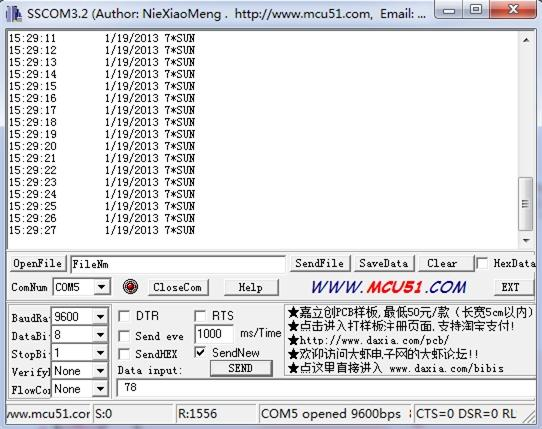
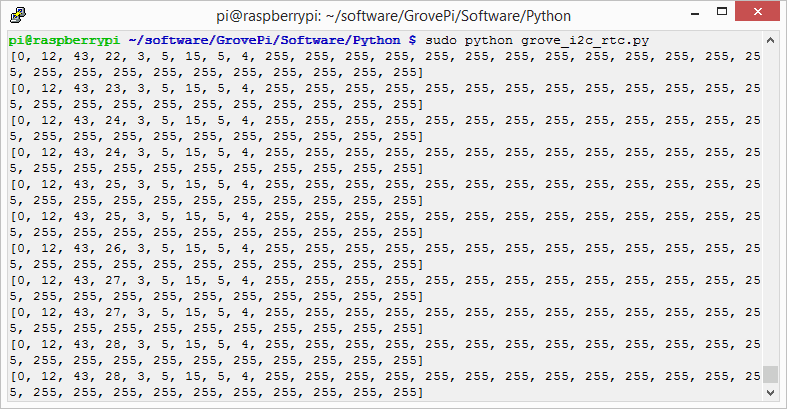
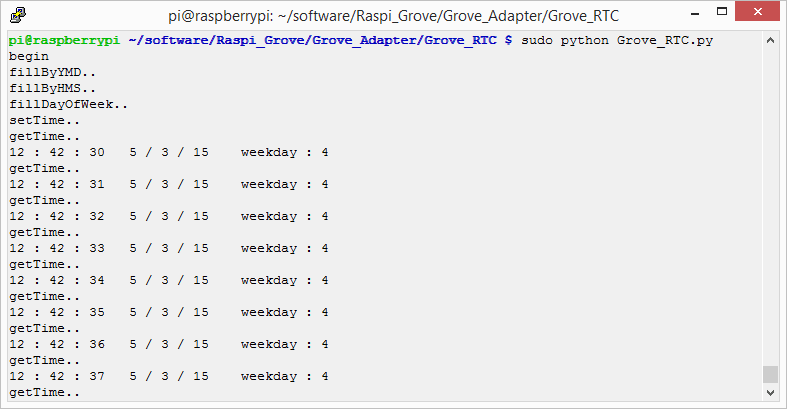

The RTC module is based on the clock chip DS1307, which supports the I2C protocol. It utilizes a Lithium cell battery (CR1225). The clock/calendar provides seconds, minutes, hours, day, date, month, and year. The end of the month date is automatically adjusted for months with fewer than 31 days, including corrections for leap years. The clock operates in either the 24-hour or 12-hour format with AM/PM indicator. And it is valid up to 2100. In order to gain a robust performance, you must put a 3-Volt CR1225 lithium cell in the battery-holder. If you use the primary power only, the module may not work normally, because the crystal may not oscillate.
Previous Version: V0.9b
Note: The battery is not included.
Model:SEN12671P
The following sketch demonstrates a simple application of setting the time and reading it out.
#include <Wire.h>
#include "DS1307.h"
DS1307 clock;//define a object of DS1307 class
void setup()
{
Serial.begin(9600);
clock.begin();
clock.fillByYMD(2013,1,19);//Jan 19,2013
clock.fillByHMS(15,28,30);//15:28 30"
clock.fillDayOfWeek(SAT);//Saturday
clock.setTime();//write time to the RTC chip
}
void loop()
{
printTime();
}
/*Function: Display time on the serial monitor*/
void printTime()
{
clock.getTime();
Serial.print(clock.hour, DEC);
Serial.print(":");
Serial.print(clock.minute, DEC);
Serial.print(":");
Serial.print(clock.second, DEC);
Serial.print(" ");
Serial.print(clock.month, DEC);
Serial.print("/");
Serial.print(clock.dayOfMonth, DEC);
Serial.print("/");
Serial.print(clock.year+2000, DEC);
Serial.print(" ");
Serial.print(clock.dayOfMonth);
Serial.print("*");
switch (clock.dayOfWeek)// Friendly printout the weekday
{
case MON:
Serial.print("MON");
break;
case TUE:
Serial.print("TUE");
break;
case WED:
Serial.print("WED");
break;
case THU:
Serial.print("THU");
break;
case FRI:
Serial.print("FRI");
break;
case SAT:
Serial.print("SAT");
break;
case SUN:
Serial.print("SUN");
break;
}
Serial.println(" ");
}
clock.fillByYMD(2013,1,19);//Jan 19,2013
clock.fillByHMS(15,28,30);//15:28 30"
clock.fillDayOfWeek(SAT);//Saturday

The output time is changing like the clock.
1.You should have got a raspberry pi and a grovepi or grovepi+.
2.You should have completed configuring the development enviroment, otherwise follow here.
3.Connection
4.Navigate to the demos' directory:
cd yourpath/GrovePi/Software/Python/
nano grove_i2c_rtc.py # "Ctrl+x" to exit #
import time
import grovepi
# Connect the Grove Real Time Clock to any I2C port eg. I2C-1
# Can be found at I2C address 0x68
# SCL,SDA,VCC,GND
while True:
try:
print grovepi.rtc_getTime()
time.sleep(.5)
except IOError:
print "Error"
5.Run the demo.
sudo python grove_i2c_rtc.py
6.Result

7.Use this demo to show the time in common
''' /* * Grove-RTC.py * Demo for Raspberry Pi * * Copyright (c) 2014 seeed technology inc. * Website : www.seeed.cc * Author : Lambor * Create Time: Nov 2014 * Change Log : * * The MIT License (MIT) * * Permission is hereby granted, free of charge, to any person obtaining a copy * of this software and associated documentation files (the "Software"), to deal * in the Software without restriction, including without limitation the rights * to use, copy, modify, merge, publish, distribute, sublicense, and/or sell * copies of the Software, and to permit persons to whom the Software is * furnished to do so, subject to the following conditions: * * The above copyright notice and this permission notice shall be included in * all copies or substantial portions of the Software. * * THE SOFTWARE IS PROVIDED "AS IS", WITHOUT WARRANTY OF ANY KIND, EXPRESS OR * IMPLIED, INCLUDING BUT NOT LIMITED TO THE WARRANTIES OF MERCHANTABILITY, * FITNESS FOR A PARTICULAR PURPOSE AND NONINFRINGEMENT. IN NO EVENT SHALL THE * AUTHORS OR COPYRIGHT HOLDERS BE LIABLE FOR ANY CLAIM, DAMAGES OR OTHER * LIABILITY, WHETHER IN AN ACTION OF CONTRACT, TORT OR OTHERWISE, ARISING FROM, * OUT OF OR IN CONNECTION WITH THE SOFTWARE OR THE USE OR OTHER DEALINGS IN * THE SOFTWARE. */ ''' #!/usr/bin/python import time import smbus bus = smbus.SMBus(1) # 0 = /dev/i2c-0 (port I2C0), 1 = /dev/i2c-1 (port I2C1) class DS1307(): def __init__(self): self.MON = 1 self.TUE = 2 self.WED = 3 self.THU = 4 self.FRI = 5 self.SAT = 6 self.SUN = 7 self.DS1307_I2C_ADDRESS = 0x68 print 'begin' def decToBcd(self, val): return ( (val/10*16) + (val%10) ) def bcdToDec(self, val): return ( (val/16*10) + (val%16) ) def begin(self, news): print news def startClock(self): bus.write_byte(self.DS1307_I2C_ADDRESS, 0x00) self.second = bus.read_byte(self.DS1307_I2C_ADDRESS) & 0x7f bus.write_byte_data(self.DS1307_I2C_ADDRESS, 0x00, self.second) print 'startClock..' def stopClock(self): bus.write_byte(self.DS1307_I2C_ADDRESS, 0x00) self.second = bus.read_byte(self.DS1307_I2C_ADDRESS) | 0x80 bus.write_byte_data(self.DS1307_I2C_ADDRESS, 0x00, self.second) print 'stopClock..' def setTime(self): data = [self.decToBcd(self.second), self.decToBcd(self.minute), \ self.decToBcd(self.hour), self.decToBcd(self.dayOfWeek), \ self.decToBcd(self.dayOfMonth), self.decToBcd(self.month), \ self.decToBcd(self.year)] bus.write_byte(self.DS1307_I2C_ADDRESS, 0x00) bus.write_i2c_block_data(self.DS1307_I2C_ADDRESS,0x00,data) print 'setTime..' def getTime(self): bus.write_byte(self.DS1307_I2C_ADDRESS, 0x00) data = bus.read_i2c_block_data(self.DS1307_I2C_ADDRESS,0x00) #A few of these need masks because certain bits are control bits self.second = self.bcdToDec(data[0] & 0x7f) self.minute = self.bcdToDec(data[1]) self.hour = self.bcdToDec(data[2] & 0x3f) #Need to change this if 12 hour am/pm self.dayOfWeek = self.bcdToDec(data[3]) self.dayOfMonth = self.bcdToDec(data[4]) self.month = self.bcdToDec(data[5]) self.year = self.bcdToDec(data[6]) print 'getTime..' def fillByHMS(self, _hour, _minute, _second): self.hour = _hour self.minute = _minute self.second = _second print 'fillByHMS..' def fillByYMD(self, _year, _month, _day): self.year = _year - 2000 self.month = _month; self.dayOfMonth = _day print 'fillByYMD..' def fillDayOfWeek(self, _dow): self.dayOfWeek = _dow print 'fillDayOfWeek..' if __name__ == "__main__": clock = DS1307() clock.fillByYMD(2015,3,5) clock.fillByHMS(12,42,30) clock.fillDayOfWeek(clock.THU) clock.setTime() while True: clock.getTime() print clock.hour, ":", clock.minute, ":", \ clock.second, " ", clock.dayOfMonth, "/", \ clock.month, "/", clock.year," ", "weekday", \ ":", clock.dayOfWeek time.sleep(1)
8.Create grove_rtc.py and copy codes above.
9.Run the code
sudo python grove_rtc.py
10.Result
